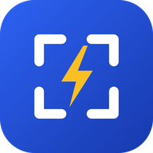

Ultimo aggiornamento: 18 novembre 2026 · English version below
Davide Iervolino (Diervsoft), sviluppatore dell'app. Contatto: dierv@hotmail.it.
Le foto e le note audio possono contenere dati personali di terzi (per esempio persone, targhe o nomi su citofoni e quadri): sei tu, come professionista, a deciderne l'uso nel rispetto delle norme sulla privacy.
Puoi accedere con Apple o con Google. Riceviamo dal servizio scelto un identificativo dell'account, l'indirizzo email (con Apple può essere un indirizzo nascosto) e, se lo condividi, il nome. Ci servono per riconoscerti, per collegare i tuoi acquisti all'account e, se hai un piano, per sincronizzare i tuoi impianti. La password non passa mai dall'app: l'accesso lo gestiscono Apple o Google.
I pagamenti li gestiscono Apple (App Store) o Google (Google Play): non vediamo i dati della carta né quelli di pagamento. Per collegare un acquisto al tuo account, l'app manda al nostro server la ricevuta firmata dallo store. Ne conserviamo solo il codice del prodotto, gli identificativi della transazione, le date di acquisto e di scadenza, l'ambiente (prova o store) e l'eventuale rimborso. Lo store ci avvisa anche dei rinnovi, delle disdette e dei rimborsi.
È compreso nei piani Pro e Studio e funziona solo se hai fatto l'accesso. Una copia di sopralluoghi, planimetrie, foto, note audio, disegni e legenda dei simboli viene salvata sui server di Google Cloud (Firebase) nella regione europe-west8 (Milano), così ritrovi gli impianti sugli altri dispositivi. I dati sono cifrati durante il trasferimento e sui server, e le regole di accesso permettono di leggerli solo al tuo account. Per applicare il limite del tuo piano teniamo il conto dello spazio occupato e del numero di file.
Il riconoscimento con l'intelligenza artificiale è spento finché non inserisci nelle Impostazioni una tua chiave API di uno di questi servizi: Claude (Anthropic), ChatGPT (OpenAI), Gemini (Google) o Grok (xAI). Solo in quel caso, e solo per le foto che fai analizzare, l'app invia la foto e il testo della richiesta direttamente dal dispositivo al servizio che hai scelto, con una connessione cifrata. Non passiamo da nostri server e non conserviamo questi dati. Il trattamento da parte del servizio scelto segue il contratto e l'informativa che hai con quel fornitore.
Ogni permesso si usa solo quando attivi la funzione e puoi revocarlo dalle impostazioni del dispositivo.
I dati dell'archivio restano nella regione di Milano. Alcuni servizi di Google, come l'accesso, possono trattare dati anche fuori dall'Unione europea, con le garanzie previste dal GDPR (clausole contrattuali standard ed EU-U.S. Data Privacy Framework).
Non vendiamo dati, non mostriamo pubblicità, non usiamo strumenti di tracciamento né di analisi e non condividiamo dati con terzi, salvo i fornitori indicati sopra e il servizio di intelligenza artificiale scelto da te.
L'app è uno strumento professionale e non è rivolta ai minori.
Puoi chiedere l'accesso ai tuoi dati, la rettifica, la cancellazione, la limitazione, la portabilità e opporti al trattamento scrivendo a dierv@hotmail.it. La cancellazione la puoi fare anche da solo dall'app, e i tuoi impianti li puoi esportare in qualsiasi momento con il backup completo. Puoi anche presentare reclamo al Garante per la protezione dei dati personali (garanteprivacy.it).
Se cambiamo questa informativa aggiorniamo la data in alto. Per le modifiche importanti ti avvisiamo nell'app.
Last updated: 18 November 2026
Summary. Without an account, everything you create (surveys, floor plans, photos, voice notes, handwriting, settings) stays on your device. The account is optional: if you sign in with Apple or Google, we use your email address and an identifier to restore your purchases on all your devices. With a Pro or Studio plan you can turn on server storage: a copy of your projects is stored on Google Cloud servers in Milan and synced across your devices. No ads, no tracking, no analytics, and we never sell data.
Controller. Davide Iervolino (Diervsoft), the app developer. Contact: dierv@hotmail.it.
On the device. Surveys, plans, photos, voice notes and drawings are stored on the device and copied to the device's Documents/SopraLux folder. Backups and exports are created by you and saved or shared wherever you choose. Settings and AI API keys stay on the device and are never sent to our server.
Account (optional). Sign in with Apple or Google. We receive an account identifier, your email address (with Apple this may be a hidden relay address) and, if you share it, your name. We use them to recognise you, link your purchases to your account and, with a plan, sync your projects. Your password never goes through the app.
Purchases and subscriptions. Payments are handled by Apple (App Store) or Google (Google Play); we never see card or payment details. To link a purchase to your account the app sends the store-signed receipt to our server. We keep only the product code, transaction identifiers, purchase and expiry dates, environment (test or store) and any refund. The store also notifies us of renewals, cancellations and refunds.
Server storage and sync. Included in the Pro and Studio plans and only when you are signed in. A copy of surveys, plans, photos, voice notes, drawings and symbol legend is stored on Google Cloud (Firebase) in the europe-west8 (Milan) region so you can find your projects on your other devices. Data is encrypted in transit and at rest, and access rules allow only your account to read it. To apply your plan's limit we keep a count of the space used and the number of files.
Optional AI. AI recognition is off unless you enter your own API key for Claude (Anthropic), ChatGPT (OpenAI), Gemini (Google) or Grok (xAI). Only then, and only for the photos you choose to analyse, the app sends the photo and request text directly from your device to the provider you selected over an encrypted connection. It does not go through our servers and we do not store it.
Permissions. Camera (photos), microphone (voice notes), photos and files (plans, archive, exports), motion sensors (compass). Each is used only when you use the related feature and can be revoked in the device settings.
Legal bases. Account, purchases and server storage: performance of the service you requested. Purchase verification: also our legitimate interest in preventing unauthorised use of subscriptions.
Processors. Google (Firebase Authentication, Cloud Firestore, Cloud Storage, Cloud Functions) hosts the account, purchases and server storage. Apple and Google handle sign-in with their accounts and store payments under their own policies. Server storage stays in the Milan region; some Google services, such as sign-in, may also process data outside the EU under GDPR safeguards (standard contractual clauses and the EU-U.S. Data Privacy Framework).
Sharing. We do not sell data, show ads, use tracking or analytics, or share data with third parties other than the providers above and the AI provider you choose.
Retention and deletion. On the device, data remains as long as you keep it. Account and server data remain while you have an account; in the app, Account → Delete account deletes the account and all data stored on the server (and revokes Apple's authorisation if you signed in with Apple). After deletion, purchase records are kept without any link to you, to prevent the same purchase being used twice. Deleting the account does not cancel a subscription: cancel it in the App Store or Google Play settings.
Children. The app is a professional tool and is not directed at children.
Your rights. You can request access, rectification, erasure, restriction, portability or object to processing by writing to dierv@hotmail.it. You can delete your account yourself in the app and export your projects at any time with the full backup. You can also lodge a complaint with the Italian data protection authority (garanteprivacy.it).
Changes. If we change this policy we update the date at the top; for important changes we notify you in the app.